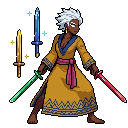

CURRENT RILEY · NEW DRAFT · NOT APPROVED
Four Sword attack
Independent sweeping attacks for the floating gold and blue swords; body-driven, alternating cuts for the held green and red swords. Inspired by your two movement references, without copying either literally.
Loading draft…
Locked approved references

Master design

Exact identity source

Recovery / guard reference